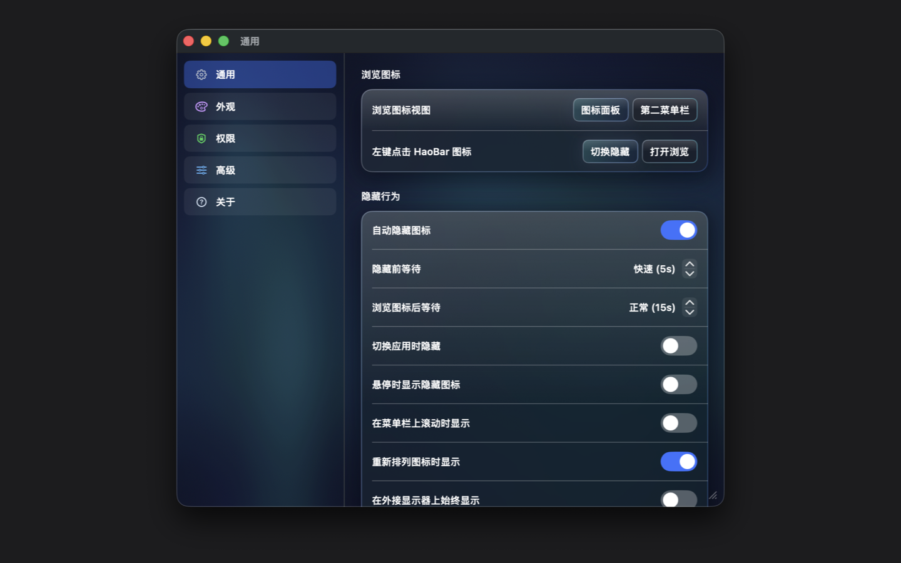
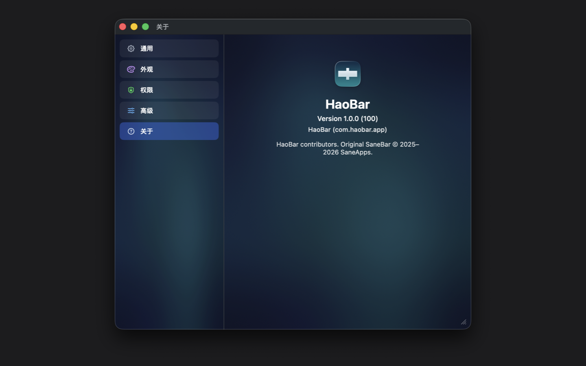

点图标，显示或隐藏 Click to show or hide
点菜单栏里的 HaoBar，藏起来的图标会回来；再点一次，重新收起。 Click HaoBar in the menu bar to reveal tucked-away icons, then click again to put them away.
macOS · Apple Silicon
点一下 HaoBar，藏起来的就会回来。重要的留在外面，其余的不要挡路。设置只存在这台 Mac 上，不用账号，也不上传。 Click HaoBar and the tucked-away extras come back. Keep the important ones visible. Settings stay on this Mac — no account, no upload.
点 HaoBar：用不到的先收起来，要用时再展开。 Click HaoBar: tuck unused extras away, then bring them back.

HaoBar 是 SaneBar 的免费 MIT 分支，给 Mac App Store 做了沙箱裁剪。它只做一件事：让菜单栏里真正用得上的图标留在外面。 HaoBar is a free MIT fork of SaneBar, trimmed for the Mac App Store sandbox. It does one job: keep the extras you actually use visible.
点菜单栏里的 HaoBar，藏起来的图标会回来；再点一次，重新收起。 Click HaoBar in the menu bar to reveal tucked-away icons, then click again to put them away.
想一次看清隐藏图标，用图标面板；想要一整行，用第二菜单栏。 Browse hidden extras in the Icon Panel, or keep a full extra row with the Second Menu Bar.
图标太多时，搜名字，再双击打开对应应用。 When the bar is crowded, search by name and double-click to open the app.
快捷键和配置都存在这台 Mac。需要时，可用 Touch ID 再显示隐藏图标。 Shortcuts and profiles stay on this Mac. Optionally require Touch ID before revealing hidden extras.
Mac App Store 版跑在沙箱里。下面这些能力没有包含，避免你装完才发现对不上。 The Mac App Store build is sandboxed. These capabilities are not included, so you are not surprised after install.
HaoBar 不创建账号，不上传菜单栏内容、图标名或标识符，也不向服务器发送使用事件。辅助功能权限只用来识别和整理菜单栏图标，不读其他窗口，也不记录按键。 HaoBar does not create an account, does not upload menu bar contents, icon names, or identifiers, and does not send usage events. Accessibility is used only to detect and arrange menu bar extras — not to read other windows or log keystrokes.
阅读隐私政策 Read the privacy policy